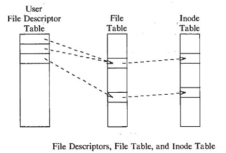

File Descriptor
Table of Contents
1. Using file descriptors
https://www.ibm.com/docs/en/aix/7.1?topic=volumes-using-file-descriptors
#include <stdio.h>
#include <fcntl.h>
#include <unistd.h>
int main() {
int fd;
fd = open("1.txt", O_RDONLY);
printf("fd = %d\n", fd);
fd = open("2.txt", O_RDONLY);
printf("fd = %d\n", fd);
fd = open("3.txt", O_RDONLY);
printf("fd = %d\n", O_RDONLY);
return 0;
}
If run this code, the output will be below
3 4 5
Let's try another source code:
#include <stdio.h>
#include <fcntl.h>
#include <unistd.h>
int main() {
int fd;
fd = open("1.txt", O_RDONLY);
close(fd);
fd = open("2.txt", O_RDONLY);
close(fd);
fd = open("3.txt", O_RDONLY);
close(fd);
return 0;
}
The output when running this below:
3 3 3
A file descriptor is an unsigned integer used by a process to identify an open file.
The number of file descriptors available to a process is limited by the
/OPEN_MAX control in the sys/limits.h file. The number of file descriptors is
also controlled by the ulimit -n flag. The open, pipe, creat, and fcntl
subroutines all generate file descriptors. File descriptors are generally
unique to each process, but they can be shared by child processes created with
a fork subroutine or copied by the fcntl, dup, and dup2 subroutines.
File descriptors are indexes to the file descriptor table in the ublock area maintained by the kernel for each process. The most common ways for processes to obtain file descriptors are through open and creat operations or through inheritance from a parent process. When a fork operation occurs, the descriptor table is copied for the child process, which allows the child process equal access to the files used by the parent process.
1.1. File descriptor tables and system open file tables
The file descriptor and open file table structures track each process' access to a file and ensure data integrity.
2. Is file descriptor table necessary?
https://stackoverflow.com/questions/45418717/is-file-descriptor-table-necessary According to what I have read, processes get a fd that indexes into user fd table that in turn returns a pointer into file table that maintains offset, pointer to inode and other properties of the opened file. So fd is basically maintaining a way to access file on disk, its position in the file. So can't commands like open directly return pointer into file table rather than going through the indirection of user fd table? Is it there for security or for some other reason, or have I understood this wrong? 
-> Isn't fd table allocated for every new process and file table the global table in the kernel?
-> That's it. A table in the kernel is necessary to be able to track every open file in the system and manage all of this correctly, and at least some information is needed in the user space of the process.
-> User space needs to know the file table entries for the files it has opened so you don't system calls directly give a pointer to that instead of going through user fd table.
-> Because you can't have a user space pointer pointing to something in the kernel.
-> If the program is in user mode the kernel won't allow access to the kernel memory, however if uintptr a = open(…); read(a, buffer, sizeof(buffer)) the program would go into kernel mode for system calls which will allow the access to kernel memory, so wldnt having a pointer simplify one step for the kernel.
-> Why would it simplify? An int or a pointer would necessitate the same operations. But using a pointer would mean that the kernel is mapped into the address space of the process, which is probably a too strong constraint on implementation.
3. What are file descriptors, explained in simple terms?
https://stackoverflow.com/questions/5256599/what-are-file-descriptors-explained-in-simple-terms https://bottomupcs.com/ch01s03.html
- What would be a more simplified description of file descriptors compared to Wikipedia's? Why are they required? Say, take shell processes as an example and how does it apply for it?
- Does a process table contain more than one file descriptor. If yes, why?
- What about the concepts of stdin stdout stderr etc? I have an instance like say broswer process opened and it has opened some temporary files for displayed my html. The process uses the same fd to read/write? Also the process table … it has entries like fd1 pointer fd1 pointer … does that mean all these files are in RAM? Why else pointers?
When you open a file, OS creates a stream to that file and connect that stream to opened file, the descriptor in fact represents that stream. Similarly there are some default streams created by OS. These streams are connected to your terminal instead of files. So when you write something in terminal it goes to stdin stream and OS. And when you write "ls" command on terminal, the OS writes the output to stdout stream. stdout stream is connected to your monitor terminal so you can see the output there.
In simple words, when you open a file, the operating system creates an entry to represent that file and store the information about that opened file. So if there are 100 files opened in your OS then there will be 100 entries in OS (somewhere in kernel). These entries are represented by integers like (…100, 101, 102, …). This entry number is the file descriptor. So it is just an integer number that uniquely represents an opened file for the process. If your process open 10 files then your process table will have 10 entries for file descriptors.
Similarly, when you open a network socket, it is also represented by an integer and it is called Socket Descriptor.
4. File Descriptor and Inode
Unix makes a clear distinction between the contents of a file and the information about a file. With the exception of device and special files, each file consists of a sequence of characters. The file does not incly
5. References
https://stackoverflow.com/questions/2519973/file-descriptors-and-open-files?rq=4
https://linuxtldr.com/file-descriptors-linux/
https://chenshuo.com/notes/kernel/file-descriptor-table/
https://copyprogramming.com/howto/what-is-a-file-descriptor-in-linux#sockets-and-file-descriptors
https://www.ibm.com/docs/en/aix/7.1?topic=volumes-using-file-descriptors
https://www.unix.com/unix-for-advanced-and-expert-users/45996-file-descriptor-table.html
https://biriukov.dev/docs/fd-pipe-session-terminal/1-file-descriptor-and-open-file-description/
https://www.ibm.com/docs/en/aix/7.1?topic=volumes-using-file-descriptors